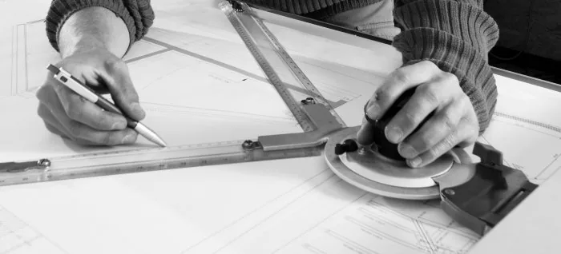

Planification
Nos techniciens étudient avec vous la solution constructive la plus appropriée, puis le bureau technique dessine les plans de construction et de détail en DAO. Pour le dimensionnement statique et la protection incendie, nous travaillons avec le bureau d’ingénieurs bois Ratio Bois Sàrl.
- Étude de projet et calcul des coûts
- Plans de construction et de détail
- Coordination avec les autres corps de métier et planification de chantier
- Plan d’enquête et conduite des travaux pour petits ouvrages
